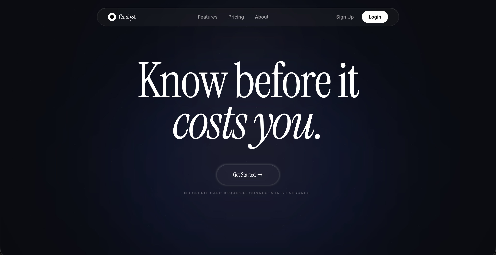

Current (CREATE-X I2P)
Project CORE:
Embedded Audio Compute
Developing a modular, solderless digital signal processing (DSP) system for electric guitars. Utilizing an ARM Cortex-M7 microcontroller to process high-fidelity audio with sub-10ms latency. The hardware is paired with a mobile-responsive, offline-first control dashboard using the Web Bluetooth API to allow real-time signal routing directly from a browser. Currently executing blind user-testing and holding a provisional patent for the hardware interface.
Tech Stack: C++, DSP, Web Bluetooth API, Fusion 360, EasyEDA
 April 2026
April 2026
Catalyst:
Cloud Burn Tracker

A proactive cloud-credit monitoring dashboard designed for early-stage founders. Built during the SproutGT Hackathon, the platform utilizes a Model Context Protocol (MCP) backend powered by Gemini 1.5 Pro to forecast burn rates, and integrates the ElevenLabs API to dispatch real-time, multilingual voice alerts.
Tech Stack: Next.js, Python, Gemini API, ElevenLabs, MongoDB
In Development
App Genius:
Low-Code Ecosystem
Currently architecting a web-based ecosystem designed to empower non-technical creators to build, test, and deploy applications without writing code. Focusing on a Progressive Web App (PWA) architecture to bypass traditional app store bottlenecks.
Tech Stack: Next.js, Cloud Architecture
Jan 2023 - Present
Linux Distributed
Server Ops
Deployed and managed a high-performance Linux-based server environment. Configured TCP/UDP port forwarding, managed headless Linux instances, wrote bash scripts for automated backups, and optimized protocol bottlenecks to maintain stability under high-concurrency loads.
Tech Stack: Linux/Unix, Bash Scripting, TCP/UDP Networking
Aug 2023 - May 2024
Autonomous
Go-Kart
Engineered the electrical and mechanical systems for a gas-powered vehicle. Programmed Arduino microcontrollers to manage engine kill-switches and monitor RPM/speed data via Hall Effect sensors. Conducted root-cause analysis on structural components after stress failures.
Tech Stack: Arduino, C, Control Systems